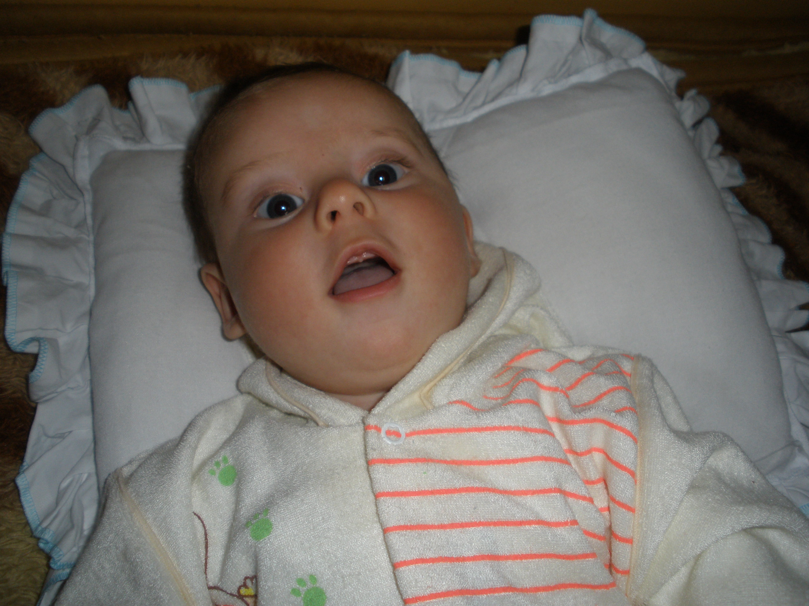

Luidi Augusto Barancelli
Data de nascimento: 11/05/2009

FUTURO
Penso em seguir na área de programação, algo na parte de desenvolvedor, seja Back ou Front End. Não estou em busca apenas de um diploma, ou algum emprego simples, mas na criação do meu LEGADO nesse mundo web. Inicialmente o foco será no desenvolvimento de conhecimento e técnicas, após, começaria a planejar o meu futuro como líder de uma EMPRESA.